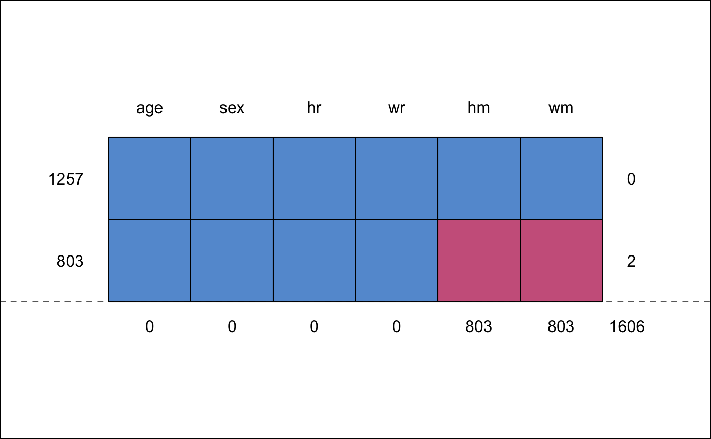

Dataset containing height and weight data (measured, self-reported) from two studies.
A data frame with 2060 rows and 15 variables:
Study, either krul or mgg (factor)
Person identification number
Population, all NL (factor)
Age of respondent in years
Sex of respondent (factor)
Height measured (cm)
Weight measured (kg)
Height reported (cm)
Weight reported (kg)
Pregnancy (factor), all Not pregnant
Educational level (factor)
Ethnicity (factor)
Obtained through web survey (factor)
BMI measured (kg/m2)
BMI reported (kg/m2)
Krul, A., Daanen, H. A. M., Choi, H. (2010). Self-reported and measured weight, height and body mass index (BMI) in Italy, The Netherlands and North America. European Journal of Public Health, 21(4), 414-419.
Van Keulen, H.M.,, Chorus, A.M.J., Verheijden, M.W. (2011). Monitor Convenant Gezond Gewicht Nulmeting (determinanten van) beweeg- en eetgedrag van kinderen (4-11 jaar), jongeren (12-17 jaar) en volwassenen (18+ jaar). TNO/LS 2011.016. Leiden: TNO.
Van der Klauw, M., Van Keulen, H.M., Verheijden, M.W. (2011). Monitor Convenant Gezond Gewicht Beweeg- en eetgedrag van kinderen (4-11 jaar), jongeren (12-17 jaar) en volwassenen (18+ jaar) in 2010 en 2011. TNO/LS 2011.055. Leiden: TNO. (in Dutch)
Van Buuren, S. (2018). Flexible Imputation of Missing Data. Second Edition. Chapman & Hall/CRC. Boca Raton, FL.
This dataset combines two datasets: krul data (Krul, 2010) (1257
persons) and the mgg data (Van Keulen 2011; Van der Klauw 2011) (803
persons). The krul dataset contains height and weight (both measures
and self-reported) from 1257 Dutch adults, whereas the mgg dataset
contains self-reported height and weight for 803 Dutch adults. Section 7.3 in
Van Buuren (2012) shows how the missing measured data can be imputed in the
mgg data, so corrected prevalence estimates can be calculated.
#> age sex hr wr hm wm #> 1257 1 1 1 1 1 1 0 #> 803 1 1 1 1 0 0 2 #> 0 0 0 0 803 803 1606### FIMD Section 7.3.5 Application bmi <- function(h, w) { return(w / (h / 100)^2) } init <- mice(selfreport, maxit = 0)#> Warning: Number of logged events: 2meth <- init$meth meth["bm"] <- "~bmi(hm,wm)" pred <- init$pred pred[, c("src", "id", "web", "bm", "br")] <- 0 imp <- mice(selfreport, pred = pred, meth = meth, seed = 66573, maxit = 2, m = 1)#> #> iter imp variable #> 1 1 hm wm edu etn bm#> Error in bmi(hm, wm): could not find function "bmi"## imp <- mice(selfreport, pred=pred, meth=meth, seed=66573, maxit=20, m=10) ### Like FIMD Figure 7.6 cd <- complete(imp, 1)#> Error in complete(imp, 1): object 'imp' not found#> Error in xy.coords(cd$bm, cd$br - cd$bm): object 'cd' not foundplot(xy, col = mdc(2), xlab = "Measured BMI", ylab = "Reported - Measured BMI", xlim = c(17, 45), ylim = c(-5, 5), type = "n", lwd = 0.7 )#> Error in plot(xy, col = mdc(2), xlab = "Measured BMI", ylab = "Reported - Measured BMI", xlim = c(17, 45), ylim = c(-5, 5), type = "n", lwd = 0.7): object 'xy' not foundidx <- cd$src == "krul"#> Error in eval(expr, envir, enclos): object 'cd' not foundxyc <- xy#> Error in eval(expr, envir, enclos): object 'xy' not foundxyc$x <- xy$x[idx]#> Error in eval(expr, envir, enclos): object 'xy' not foundxyc$y <- xy$y[idx]#> Error in eval(expr, envir, enclos): object 'xy' not foundxys <- xy#> Error in eval(expr, envir, enclos): object 'xy' not foundxys$x <- xy$x[!idx]#> Error in eval(expr, envir, enclos): object 'xy' not foundxys$y <- xy$y[!idx]#> Error in eval(expr, envir, enclos): object 'xy' not found#> Error in points(xyc, col = mdc(1), cex = 0.7): object 'xyc' not found#> Error in points(xys, col = mdc(2), cex = 0.7): object 'xys' not found#> Error in xy.coords(x, y, setLab = FALSE): object 'xyc' not found#> Error in xy.coords(x, y, setLab = FALSE): object 'xys' not found